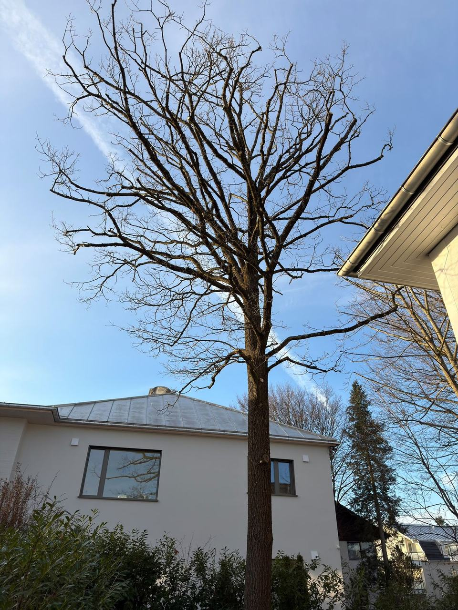
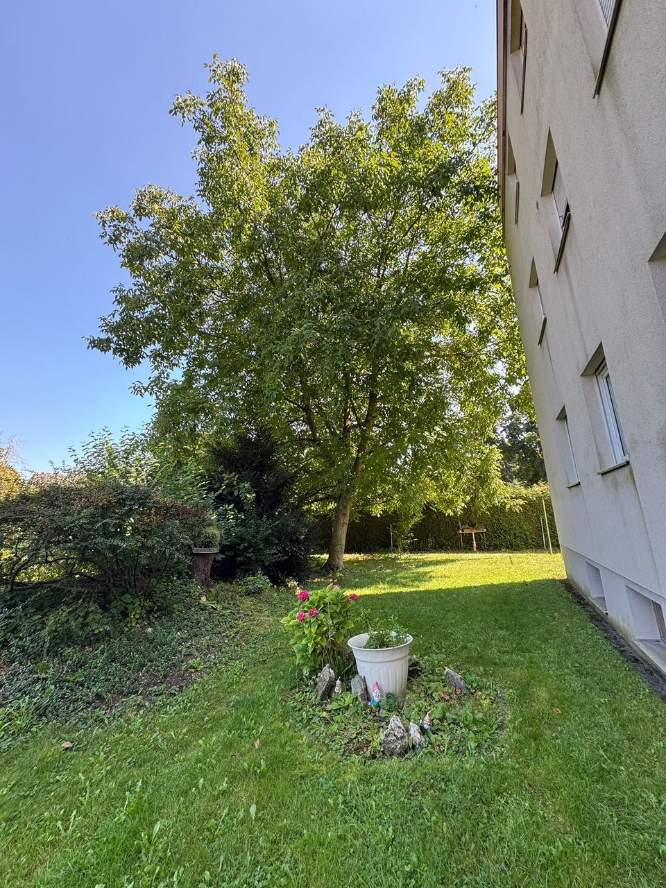
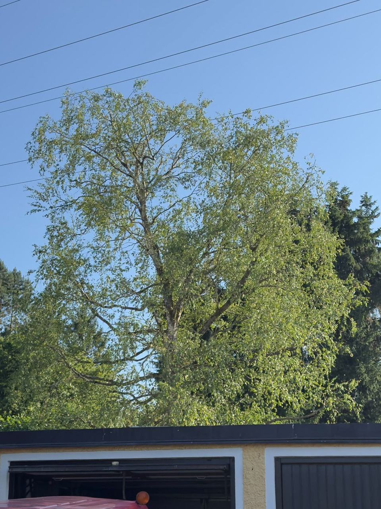
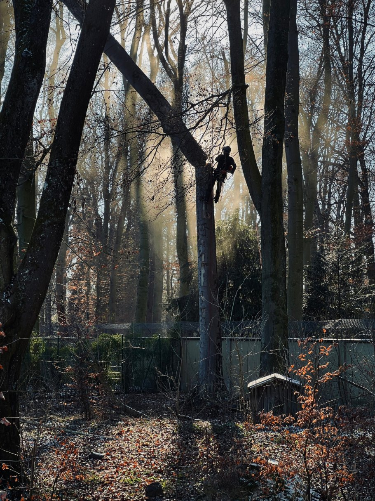

 VorherNachher
VorherNachher
01
Eiche
Kronenpflege
Baumpflege, Fällung und Gartenpflege aus Neuried. Mit Seilklettertechnik und Hebebühne arbeiten wir sicher an jedem Baum und hinterlassen Ihr Grundstück aufgeräumt.

VorherNachher
Kronenpflege

 VorherNachher
VorherNachher
Totholz entfernt & aufgeastet

 VorherNachher
VorherNachher
Kronenschnitt


VorherNachherKronenpflege
Ein Ansprechpartner für alles, was an Ihrem Baum und in Ihrem Garten anfällt. Von der ersten Einschätzung bis zum letzten Ast auf dem Hänger.
Kronenpflege, Totholzentfernung und Baumkontrollen für Vitalität und Verkehrssicherheit.
Kontrolliert und sicher, auch auf engstem Raum mit Seilklettertechnik oder Hebebühne.
Pflege- und Formschnitte sowie fachgerechte Kroneneinkürzungen.
Baumstümpfe sauber und platzsparend entfernt.
Neue Bäume und Sträucher, von der Auswahl bis zum Setzen.
Hecken- und Strauchschnitt, Rasen und laufende Pflege.
Holz- und Steinflächen gründlich von Moos und Algen befreit.
Schnittgut, Stammholz und Laub werden komplett abtransportiert.

Wir sind ein Fachbetrieb für Baumpflege aus Neuried. Wir klettern selbst in die Krone, schneiden nach den Regeln der ZTV-Baumpflege und besprechen jede Maßnahme vorher persönlich mit Ihnen.
So bleibt Ihr Baum gesund und sicher, und Sie wissen immer, was passiert und warum.
„Die Arbeiten waren professionell und gründlich. Meine Bäume sehen nach der Einkürzung fantastisch aus!“Karin Mönich
„Eine zuverlässige Firma, die wirklich weiß, was sie tut.“Helmut

Ob enger Hinterhof oder hoher Baum direkt am Haus: Wir bringen die passende Technik mit, arbeiten sicher und hinterlassen Ihr Grundstück aufgeräumt.
Entfernt Baumstümpfe bodentief, ohne den Garten aufzureißen.
Schnell und sicher in großer Höhe, überall wo sie hinpasst.
Für Bäume, an die keine Maschine herankommt.
Baumpflege umfasst Maßnahmen zur Erhaltung, Wiederherstellung oder Verbesserung der Vitalität eines Baumes sowie zur Sicherung seines Umfelds.
Zu beachten sind unter anderem die jeweils geltende Baumschutzverordnung bzw. -satzung sowie die Vorgaben des Bundesnaturschutzgesetzes. Im Einzelfall können Genehmigungen erforderlich sein.
Schonende Form- und Pflegeschnitte sind grundsätzlich ganzjährig möglich. Für stärkere Eingriffe und Fällungen gelten insbesondere zwischen 1. März und 30. September naturschutzrechtliche Einschränkungen.
Je nach Situation arbeiten wir mit Seilklettertechnik, Hebebühnen und weiteren modernen Verfahren, um sicher und effizient zu arbeiten.
Schreiben Sie uns kurz, worum es geht. Wir melden uns persönlich bei Ihnen und finden gemeinsam die richtige Lösung für Ihren Baum.
Passen Sie die Seite an Ihre Bedürfnisse an. Ihre Auswahl bleibt gespeichert.